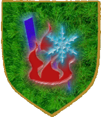

| Übersicht,
Allgemeines |
|
wichtelkarte
|
| Xiandrie Dowan (RIP) |
Grade will ich mir eine Route raus suchen um mit meinem Schiffchen von a nach b zu kommen, da fällt mir auf .... wo sind die ganzen Fahnen hin?
|
09.11.06 13:33

|
|
Zorra
 |
Sind futsch..... |
10.11.06 1:31
 |
|
| Glorfindel von Gondolin (RIP) |
*snüff* Warum? |
10.11.06 9:49
|
|
| Hector von Troja (RIP) |
wurden alle von radikalen islamisten verbrannt.die zeitung nicht gelesen? *gg* |
10.11.06 10:04
|
|
| Oren Ereliath (RIP) |
Hmm.. ich hätt die Fähnchen aber gerne wieder.. ^^
Sind die aus Spionagegründen weg oder wieso? |
10.11.06 10:59
|
|
Klaus Störtebeker
 |
"Wo sind all die Fahnen hin, wo sind sie geblie-hieben? Die Antwort, mein Freund, kennt allein der Wind, die Antwort, die kennt nur der Wind" *sing* ^^
In irgendeinem Vorschlag hatte man sich mal beklagt, daß man über die Fahnen der Wichtelkarte Aufklärung betreiben könnte, wo wer haust. Vielleicht sind sie dem zum Opfer gefallen? Oder aber, weil die Fähnchen ab & an Details einer Karte verdeckten? Die Antwort kennt nur Wind... äh, der Aronius *g* |
10.11.06 11:18
|
|
| Xiandrie Dowan (RIP) |
wäre schön wenn du noch wüsstest welcher vorschlag es war, dann kann ich es mir sparen einen vorschlag für die wieder anschaffung der Fahnen zu machen.
Sind ja nur noch rote und blaue Punkte zu sehen ... irgendwie frag ich mich grade wozu ich mir die angeschafft habe, bei den ganzen fehlenden Daten ... keine tempel, keine gebs eingezeichnet und nun sind die fahnen futscht ... |
10.11.06 12:51
|
|
Aramina Silberstein
 |
mal sie dir doch selbst auf ;) |
10.11.06 12:57
|
|
| Slim Greybeart (RIP) |
Also Dümmer können hier wohl keine Antworten sein auf ne normale Frage |
10.11.06 13:29
|
|
| Calypso (RIP) |
ich weiß nicht was ihr habt... |
10.11.06 15:46
|
|
| Hector von Troja (RIP) |
da sind sie doch wieder. also hat sich das thema recht humorvoll erledigt^^ |
10.11.06 16:29
|
|
| Abel von Pavenacht (RIP) |
Wer braucht schon Wichtelkarten ... ;) |
10.11.06 16:50
|
|
Elániel Vanyië
 |
ja....Fahne ist da, aber die Karte ned *gggg* |
10.11.06 20:04
|
|
Übersicht,
Allgemeines
|